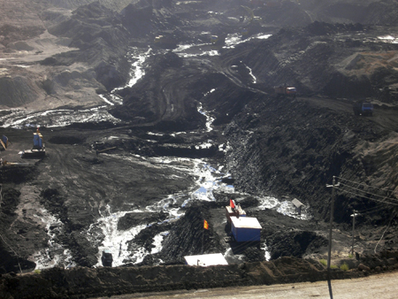
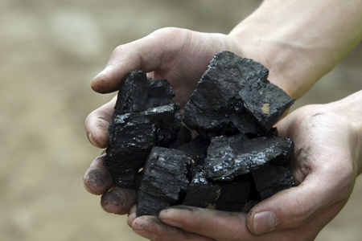

Coal Production

Mongolia has over 300 known coal deposits with an estimated 152 billion tonnes of coal resources. Of these, detailed geological studies have been completed at about 80*. Companies with coking coal deposits attract the most attention, as their products are exported at considerable profits
Mongolian coal mines gradually shifted toward the modern industrial production methods between 1940 and 1970. However, formal resource estimations, tests for coking qualities and modern geological studies were not conducted until the late sixties. However, even at the turn of the twentieth century, Russian geologists had published their observation of some of the most famous deposits today, such as Tavan Tolgoi, EgiinGol and Choir. During the twentieth century, open-pit coal mines were created in almost every aimag so that Mongolia’s domestic demand for thermal coal was completely met.

In 1993, the geologist D. Bat-Erdene and Tuya estimated that Mongolia has over 152 billion tonnes of coal resources. Since then, many private companies have entered the country, and many have completed the Australian JORC or Canadian NI 43-101 compliant resource and/or reserve estimations. The total coal resource estimation is expected to rise according to most experts, as more detailed geological surveys are completed. Mongolia’s coal production has been on the rise since the troubled 90’s, when nearly all enterprises, including coal mines, suffered due to the instability of the transitional economy. The total amount of coal mined in Mongolia began to grow rapidly after 2004, which is about the time the current resource boom and the export rush started. In 2011, the total production was at 32 million tonnes, and over 66% were for export.
In the first seven months of 2012, Mongolia mined about 14.3 million tonnes of coal, which is 7% less than the production in the same period in 2011. Many of the mining companies are reporting lower-than-expected coking coal prices and lower sales for the first half of 2012. This is mainly attributed to the Euro-zone related global economic slowdown, and the cooling of China’s steel production.
The domestic coal consumption had stayed more or less constant, between 5-6 million tonnes per annum, between 1991 and 2008. In 2009, when the domestic consumption reached 7 million tonnes, it had finally reached the recorded level in 1990. Since then, the domestic total consumption grew to 11 million tonnes in 2011. During this period of growth in domestic consumption, Mongolia experienced a pick-up in industrial output as well, although high GDP growth rates had started much earlier, driven by the coal mining industry’s contribution.
Production Outlook
The future production decisions of Mongolian firms depend heavily on where China’s economy is headed. China’s steel production, which is practically the sole end use of Mongolian coking coal, may pick up steam or cool off depending on China’s policy and other uncertain things. During the 2008 recession, China was able to sail through by boosting its domestic expenditure on fixed investments. Bridges, dams, buildings, roads and high-speed train tracks were built across the nation to inject cash into the economy, hence fill the gap left by the vanishing demands for its manufacturing goods exports.
The quagmire slowdown that began in mid-2011 as a result of the Euro-zone debt crisis has yet to see any relief or realistic route of escape, and the softness or hardness of China’s “landing” is a hot debate topic today. Whether China’s leaders will continue to boost fixed investments, which in-turn boost steel usage, is currently unclear. The other two pillars of China’s economy are domestic consumption and exports. While export is clearly suffering, domestic consumption is slowly but steadily rising. The question is whether consumption rises fast enough to replace the hole left by the falling exports and fixed investments. If no, heavy investments in more infrastructure and construction my yet be necessary to avoid a hard landing. Even if consumption rises quickly, there are other questions that must be answered, such as the source and route of financing of the infrastructure projects.
All in all, it is not likely for the coking coal consumption in China to rise significantly in the near future. However, despite the reduction in GDP growth target, China’s goal of a 7.5% growth is still a very high number. Therefore, we believe demand is certainly enough to sustain the current production level. In particular, as Mongolian coal prices are much lower than seaborne coal, the trend may even benefit the Mongolian producers for a period at the expense of Australian coal producers.
The other limiting factor to production in Mongolia is internal. Currently, the existing rail, paved and dirt roads are all struggling to meet the export demand. The processing centres at border checkpoints are operating all but at capacity. According to the president of the Association of Mongolian Industrial Geologists D. Bat-Erdene, if coal transport roads can be improved sufficiently, Mongolia can easily increase the current production level of about 30 million tonnes per annum by 10–15% . Therefore, even if China’s demand for coking coal continues to rise, infrastructure within Mongolia can be a limiting factor. The production of thermal coal depends on the demand for electricity in Mongolia, as the relatively cheap price for this product does not justify exports. As the electricity consumption driven by industrial production increases, as planned by the government, more power plants will have to be constructed. The grids in Mongolia have a total ready capacity of 890 megawatts today. The tentative plans for new power stations would add 527 megawatts to this capacity by 20157.
Source: (Mongolian Investment Bank)